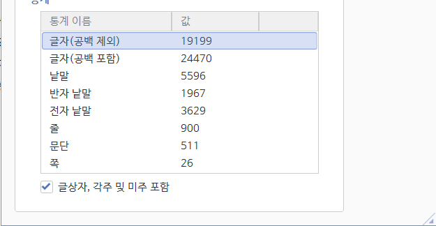

https://gall.dcinside.com/mgallery/board/view/?id=gov&no=5404719
몰라도 상관 없는 지난 이야기
요약본의 3줄 요약
1. 콘솔 효율 자체는 극악 맞다. 150일뽑의 누적 콘솔 상승치로 단섬, 파견리롤의 누적 상승분을 능가하려면 몇 년 가량 필요하다
2. 하지만 본인 위시리스트 상황에 따라 종합 효율은 언제든지 달라질 수 있고, 경우에 따라서는 150 일뽑이 단기 성장과 중장기 내실 둘 다 우위일 수 있다
3. [내용]은 최대 65535자 이하여야 합니다. 내 콘 돌려줘요
+ 요약본인 이유

정말 큰 뜻을 품었거나 니케 고수가 되려는거 아니면 총집본은 비추삼 가독성 안좋삼
Waring : 해당 글은 100% 솔레 환경을 전제로 작성되었고 - 코더, 크레딧, 베데와 같이 솔레와 관련이 낮은 재화의 가치가 0으로 계산되었으므로 특히 뉴비의 경우 파견리롤, 단기 섬멸 등의 정확한 효율을 알고 싶다면 다른 공략을 찾는 것을 권장함
1) 솔레 니케 공격력 증가 효율의 수치화 및 평준화
우선 일뽑 / 단섬 / 파견리롤 세 방식으로 얻어지는 콘솔, 장비재료, 소장품 등을 동일 선상에 놓고 비교하려면 명확한 기준이 필요하다.
마침 솔레를 기준으로 분석하기로 했으니, 우리는 콘솔 / 장비강화 / 소장품이 증가시키는 공격력 양을 바탕으로 비교 / 분석해 볼 수 있다.
솔레마다 파츠, 관통, 우코 등이 달라져 사용하는 니케의 폭이 매번 달라지지만, 최근 5번의 솔레를 조사해서 사용 니케에 각각 공격력 효율 가중치를 부여하고 그 평균을 취한다면 콘솔 강화와 연관된 필그림 니케의 비중 혹은 장비 강화 효율에 영향을 줄 화력형/지원형/방어형 니케의 비중의 경향성을 대략적으로 추산할 수 있다(상세 내역은 총집본 中 [붙임 1] 참고)
아무튼 그렇게 계산해보면 (솔레 내에서 스킬렙 등을 제하고 공격력 상승(콘솔 장비 소장품)으로 얻을 수 있는 점수 상승량이 10 이라면)
필그림은 3.6363 가량을 차지하고, 엘리시온 2.7427, 테트라 1.2378, 미실리스 1.5796, 어브노멀 0.8035 으로 정리되며,
또한 화력/지원/방어형 니케의 공격력 상승으로 얻을 수 있는 점수 상승량은 각각 화력형 5.59391 지원형 2.78289 방어형 1.62320의 비율을 가진다.
2) 일뽑 150쥬얼의 기대치
일뽑 150쥬얼은 ssr 4% / sr 43% / r 53%로 구성되어 있고 마지막에 다룰 6000콘솔의 가치를 제하면
150쥬얼 = 165.5 라벨, 여기에 필그림 콘솔 구매를 가정하면 공격력 0.7493으로 환산 된다. 즉 0.7493/150쥬얼 (비교용 수치니 지금은 그냥 넘어가자)
3) 단기 섬멸 50(70 100 150...) 쥬얼의 기대치
솔레에서 무의미한 크레딧 베데 코더를 제외하면 다음 3개 항목이 남는다
- 전초기지 방어 장비 보상 Lv. 27 (전초기지 방어 177렙부터 고정, 노말 ~30지 정도로 추정)
- 전초기지 방어 장려 물품 1 * 2
- 전초기지 방어 장려 물품 2 * 5
항목들의 경험치 합은 21,580이고 4310작의 경험치 : 공격력 비율은 2,124,000 : 3,294.9이므로(총집본 참조) 장비강화에 의한 공격력 상승분은 33.48
이때 0티어 니케는 이미 투자했을 확률이 높기에 1~2티어 딜러들이 자주 해당하는 0.7 가중치를 곱해서 23.43이 되고 (총집본 참조)
나머지 리사이클 에너지로 콘솔을 바꿔먹으면 (+0.0625) 대략 23.5/50쥬얼 (70,100,150,200..) 의 효율이 된다.
4) 파견 리롤의 기대치
이제 물어보는 사람마다 말도 다르고 공략도 다르다는 니갤의 슈퍼스타, 파견리롤 차례다.
물론 해당 글에서는 코더, 베데, 크레딧 가치를 0으로 보기에 기존 공략 대신 새로운 길을 가야한다
이때 소장품 가치 환산을 위해 아래 계산기를 활용하면
https://gall.dcinside.com/mgallery/board/view/?id=gov&no=5248723
솔레 7단계 반복수급 비율처럼 35:4:2 비율로 수급시 평균적으로 파랑 392 / 보라 43 / 노랑 14를 사용하는 것을 알 수 있고, 해당 사용 비율을 통해 키트 당 공격력 상승률을 역산하면
파랑키트 하나는 공격력 7.02, 보라키트 하나는 공격력 26.65, 노랑키트 하나는 공격력 65.82으로 계산된다(총집본 및 [붙임 2] 참조). 소장품은 화/지/방 무관하게 고정 상승이며, 앞선 장비강화 처럼 니케 가중치 0.7로 보정된다 (패시브 레벨 상승까진 계산 못함)

해당 수치를 파견리롤 확률에 따라 열심히 계산(총집편 [붙임 3]) 하면 파견리롤의 평균 효율은 대략
22.1~27.6/50쥬얼이 된다.
5) 정리 및 비교 분석
150일뽑에 의한 필그림 콘솔 구매 효율
0.7493/150쥬얼
단섬에 의한 장비강화 효율
23.5/50 (23.5/70, 23.5/100, 150, 200....)쥬얼
파견 리롤에 의한 소장품/장비강화/쥬얼 효율
22.1~27.6/50쥬얼 (평균 2.4~1.5회 리롤)
더 세세하게 파고들 부분은 많지만, 일단은 이렇게 정리할 수 있다.
5-1) 그러면 150일뽑은 효율일까?
만약 위시리스트가 전부 풀코라면, 4% 6000라벨에 의해 콘솔 효율이 0.7493 -> 1.8359/150쥬얼이 된다.
물론 솔레 주기와 인플레이션 속도에 따라 큰 차이를 보이겠지만, 0티어 니케가 대략 2년간 본인 우코에서 생존한다 가정했을 때
0티어 니케에 대한 투자만을 진행한다면 대략 18년,
1~2티어 니케에 투자시 약 4.5년,
솔레 한번 뛰는 수준의 니케를 지속적으로 육성시 약 3개월 정도만에 콘솔 누적치가 단섬 및 파견 리롤의 누적치를 추월한다.
(당연히 조건으로 삼았던 4310작, SR5->15 기준)(총집본 참고)
뭐 위시리스트에 풀코를 꽉꽉 채워두는 할배들 이야기는 별로 중요하지 않으니 다음으로 위시리스트에 풀코가 아닌 효율 니케를 넣는 상황을 보자.

위 상황처럼 모든 니케를 솔레 효율 니케로 배치한다면, 4% 확률로 SSR 니케를 얻을 경우 2039.6의 공격력 상승 효과를(총집본 [붙임 5]) 받을 수 있으며, 우코 로테이션과 가중치를 고려한다면 최종적으로
123돌 평균 24.48/150, 코강 21.65/150 정도의 상승치를 기대할 수 있다.
특히 경쟁하는 단섬/파견리롤의 가중치는 우코 로테이션이 고려되지 않았으므로 이를 포함해 계산하면 150단뽑의 평균 효율은 무려 50쥬얼 단섬의 효율과 비슷하다! (단섬/파견리롤의 육성은 해당 솔레 우코딜러에 치중, 위시리스트 돌파는 고루 분배되어 솔레 3~4번 지나면 비슷해짐) (나머지는 총집편 참조)
물론 해당 결과는 솔레 효율 니케들이 돌파/코강 여유를 남겨두고 있을 때의 이야기지만, 뽑기에선 위시리스트 돌파 효율 외에도 장기적인 콘솔 성장치 0.75를 제공하니 150일뽑이 밑지는 장사는 아닌 것으로 결론지을 수 있다.
5-1-1) 부록 1 : 그래서 6000라벨은 비틱이삼? 할배들 6000라벨 보기 싫은데
안타깝지만 6000라벨은 1.087/150쥬얼 효율로, 돌파/코강이 실제 유효 니케에 당첨됐을 때의 기회비용 575/150쥬얼과 비교하자면 비웃음의 대상이 맞다...
단 대상이 위시리스트를 풀코강으로 꽉꽉 채웠으리라 짐작된다면, 원 비교대상인 돌파/코강을 받을 유효캐의 효율이 애초에 존재하지 않으므로 대신 순수 라벨 획득 효율과 비교해서 15뽑 상당의 이득을 취한 것이라고 해석할 수도 있다.
이를 간단히 정리하면
- 특뽑에서 2연 픽업 등의 사유로 6000라벨을 띄웠다 = 대체로 무죄, 뽑기를 돌릴 때의 기댓값은 유효 니케 당첨의 기댓값임
- 미리 풀코강 했다가 무료뽑에서 6000라벨을 띄웠다 = 미래를 알고 6코강을 하지 않아 200골마 혹은 상응하는 쥬얼 소모를 손해 본 상황이라는 암묵적 동의가 있기에 대체로 무죄

- 대상이 일뽑에서 6000라벨을 띄웠다 = 위시리스트 명단에 따른 기댓값을 검증해봐야 하지만, 상당한 확률로 유죄의 여지
- 위시리스트에 당첨이라 부를만한 니케의 기댓값이 없다면 라벨 효율 기준으로 계산되어 4,500쥬얼 상당의 비틱으로 해석될 여지가 있다
+ 현재 규정은 6,000라벨을 비틱으로 간주하지 않지만, 위시리스트를 풀코강으로 채워놓고 6,000라벨 떴삼... 하는 행위는 규정과 무관하게 분노를 유발할 수 있다
6) 부록 2 : 그렇다면 특모 1은 사실 솔레 스펙업 측면에서도 현명한 소비가 아닐?까?
(B-SIDE IDOL 패키지 구성 참고)
명함 따는 경우에는 비교 대상이 아닐 정도로 효율이고, 돌파/코강을 노릴 경우를 계산해보면
특모 1(30,000\)의 경우 15뽑 + 1500쥬얼이므로
총합 603 (콘솔비중 15).
그 아래의 베이직 키트 세트(15,000\)는 720쥬얼 + 파랑키트 60개이므로
총합 367.2 (콘솔비중 1.8)
그 옆에 마스터스 크레디트 세트(30,000\)는
총합 693.7 (콘솔비중 3.75)
세 패키지 다 족쇄(명함 이후 추가 돌파, 깡오버작 이후 4310작 효율, S15 이후 SR15 효율)를 찬 상태에서의 비교라는 점에는 유의해야 하지만 결론적으로 특모 1의 효율이 크게 밀리지 않는 것을 볼 수 있다!
앞으로는 특모 1로 돌파 뚫어서솔레 기갱하겠다는 갤럼을 본다면 돈쓸깔개, 형태의 돈통이라는 모멸적인 호칭 대신 현명한 소비자 라고 부르는 습관을 들여보자
7) 부록 3 : 페이백 이벤트(1% 픽업) 효율은?
20뽑 평균 효율은 32.7525 / 300쥬얼
> 1% 픽업이라 뽑기 효율은 반토막, 보라킷 효율이 높게 계산되어 2% 픽업 대비 약간 높은 효율
100뽑 평균 효율은 28.40 / 300쥬얼
> 보라키트 영향 감소
300뽑 평균 효율은 30.12 / 300쥬얼
> 노랑키트 효율 추가 및 페이백 견조
700뽑 평균 효율은 27.39 / 300쥬얼
> 페이백 비율 늘었으나 키트 부재로 효율은 감소
+ 페이백 이벤트 순수 콘솔 수급 효율 : 0.875 / 300, 150일뽑 대비 58.3% 효율
총평 : 페이백 이벤트 효율 좀 구려보일 수 있고 실제로 다른 고성능 2% 픽업보다는 상대적으로 단기 효율이 낮지만 장기집권할 캐릭이라면 그냥 덤으로 먹는다는 느낌
장비 4310 -> 5550강 혹은 깡오버 상황의 효율, 소장품 S0->S15(SR5) 할 때의 효율 등도 다루고 싶었는데 아쉬운거삼... 계산방법은 총집편에 있으니 필요한 대로 상황따라 응용하면 뭐든 할 수 있을거삼
+ 시간이 없어서 퇴고가 다소 아쉬운데 틀린 부분이나 이상한 부분, 이걸 이해하라고 써 놓은건가 싶은 부분 댓글로 달아주면 72시간 내 확인/수정하겠삼
두서없는 글 읽어줘서 고맙고 앞으로도 행복한 니생 되길 바라는거삼
참고 공략 목록은 글자 수 제한때문에 일단 날렸삼... 총집편 보삼
서버는 역시? 한섭